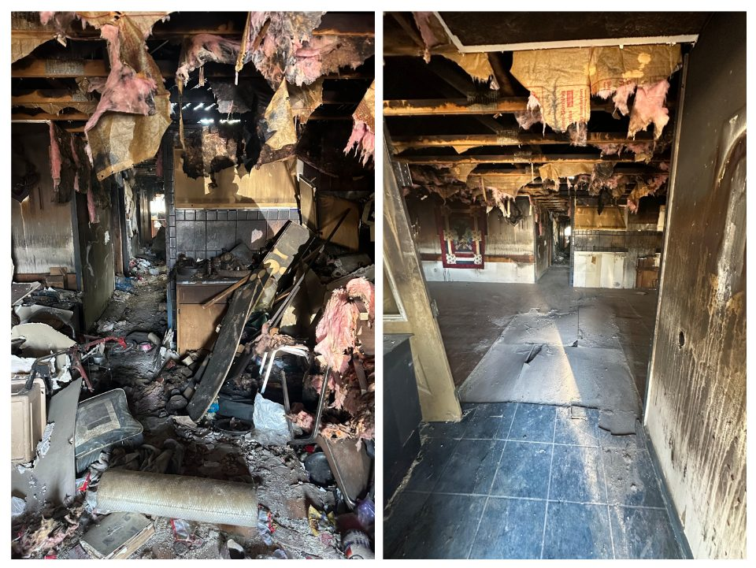

Property & estate cleanouts
Bring the house, garage, and storage areas into one plan. Tell us which belongings should stay and what needs removing.
Lander, Wyoming · Fremont County
Make room for what comes next. Property and estate cleanouts, rental turnovers, and hauling for homes and rural properties around Lander.
Prefer to talk? 307-349-4694
Bring the house, garage, and storage areas into one plan. Tell us which belongings should stay and what needs removing.
Remove left-behind furniture, appliances, and clutter so you can move on to cleaning, repairs, or listing the property.
Clear shed contents, old recreation equipment, fencing, and yard debris. Ask about light demolition for a shed or deck.
Furniture, appliances, yard piles, renovation debris, and light demolition. Refrigerators and other Freon-containing appliances are accepted.
See all services · Items we cannot take
Tell us what needs to go
Start with your location and a description. Photos and extra details are optional.
We will follow up to confirm the scope, price, and scheduling.
Prefer to talk? 307-349-4694
We do not handle regulated hazardous waste. Items that require licensed disposal must be arranged separately before we schedule. Call us if you are unsure whether something qualifies.
We do not accept paint, solvents, oils and antifreeze, batteries, fluorescent bulbs, pesticides, propane tanks, asbestos-containing materials, medical sharps, or other regulated hazardous waste. Refrigerators and other Freon-containing appliances are accepted. Tell us what you have so we can confirm the scope.
We serve Lander and the surrounding Fremont County area including Riverton, Hudson, Fort Washakie, Ethete, and other communities. Not sure if we cover your location? Call or text and we will confirm coverage.
Also serving: Riverton • Fort Washakie • Ethete • Casper • All Service Areas
Yes. Lander is part of our core Fremont County service area. We cover the city and surrounding communities. Call or text to confirm coverage for your specific address.
The total depends on volume, labor, access, travel, and disposal fees. Photos help us estimate; we may need more details or a site visit before confirming a firm price.
Yes. We handle full estate cleanouts including the house, garage, outbuildings, and yard. We provide before and after photos and leave a cleared work area ready to list or transfer.
Yes. We tear down sheds, remove the structure, and haul all debris. Same for decks, hot tubs, and playsets. Contact us with details and dimensions for a quote.
Call or text with your location and timing needs. We will confirm availability after reviewing the job.
Cash, check, Venmo, and Cash App. Payment is due when the job is done.